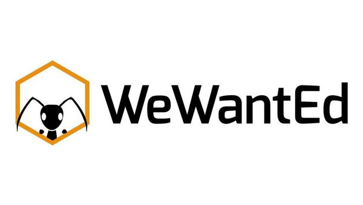

Ersin Ors

Bu site "WeWantEd Meetup Group" için jekyll ile tasarlandı.
Metin Editörleri
Hemen hemen her yazılımcının hayatında bir kez de olsa çelişkiye düştüğü bu konu hakkında yazmak istedim. Öncelikle; en iyi metin editörü diye bir şey olmadığını, tercihinizi editörlerin özelliklerine bakıp, size hangisinin en iyi hitap ettiğine göre yapmanızı tavsiye ediyorum. Bu yazıda da biraz, editörlerin farkından bahsedeceğim.
Atom
Atom, "21. yüzyılın hacklenebilir metin editörü" olarak tanımlanıyor. 2014 yılında yaratılan Atom'un günümüze kadar hızlı bir ivme kazanarak geldi. Başlıca özelliklerine bakarak devam edelim.
Paketler
Bir düzenlemeye ek özellikler ekleme yeteneği oldukça önemli bir konu. Atom da bu konuda oldukça başarılı. Paket yöneticisi varsayılan olarak yüklenir ve tüm paketlere github üstünden erişebilirsiniz. Bu yazıyı yazdığım anda bile hali hazırla 8.234 paket bulunuyor.
Düzenleme ve İş Akışı
Genel olarak atom kullanışı çok zorlamayacak bir editör. Başlangıç olarak yaşayacağınız en büyük problem ise hangi ek paketlerin kurulması gerektiğini bulmak olacaktır.
Github tarafından tasarlandığı için de tabii ki git entegrasyonu harika.
Özelleştirme
Bir editörü kendi tarzınıza göre özelleştirebilmek şüphesiz ki önemli bir husus. Atom'un döküman sayfası stilleri nasıl geçersiz kılacağınız konusunda başarılıdır. Ayarları geçersiz kılabilmesi güzel bir özellik.
Performans
Bence Atom'un en zayıf kaldığı yön bu. İlk çıktığı zamanlar daha can sıkıcı olmakla birlikte bir dosya açmak veya sekmeler arasında gezmek gibi işlemler hala aşırı derecede sinir bozucu ve can sıkıcı olabiliyor.
Sonuç olarak Atom kişiselleştirme yapmak için ideal editörlerin başında gleiyor diyebilirim. Editörünü kendi isteğine göre düzenleyebilmek editörün kullanışlılığını muhakkak arttıracaktır. Dökümantasyon olarak da iyi bir dökümantasyon sağlıyor. En büyük problemi ise dediğim gibi Atom'un hala can sıkıcı derecede yavaş olması.